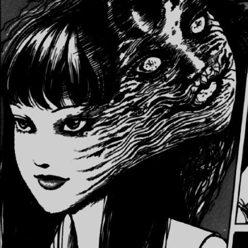
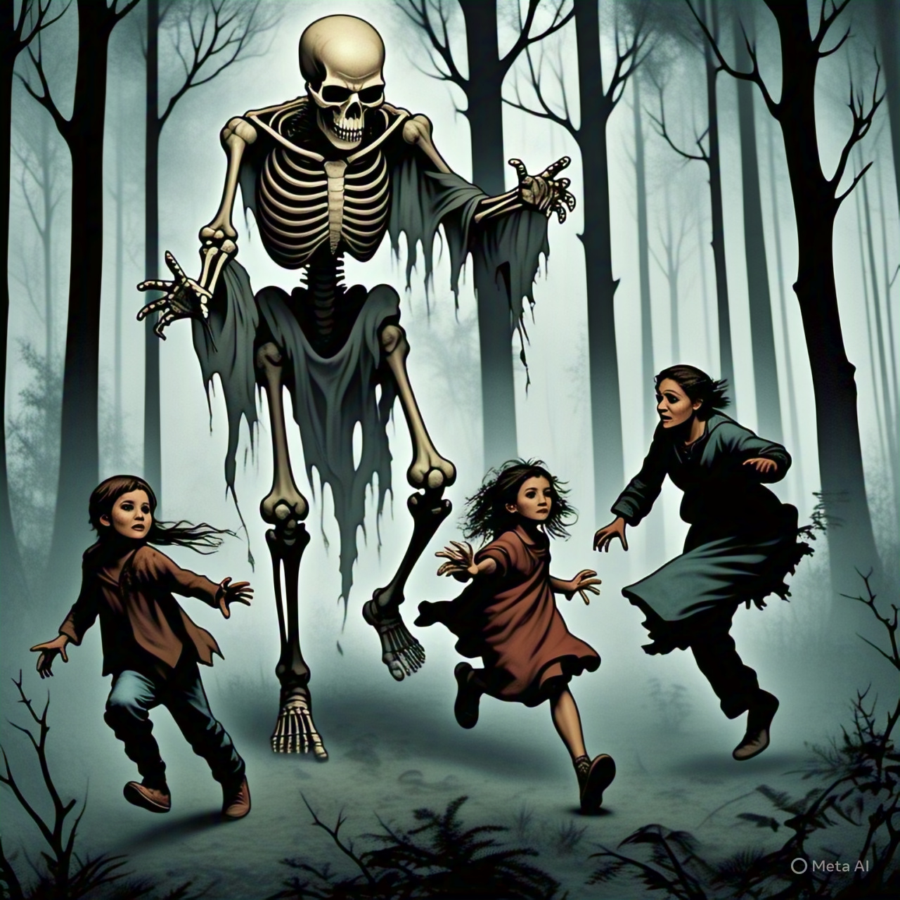
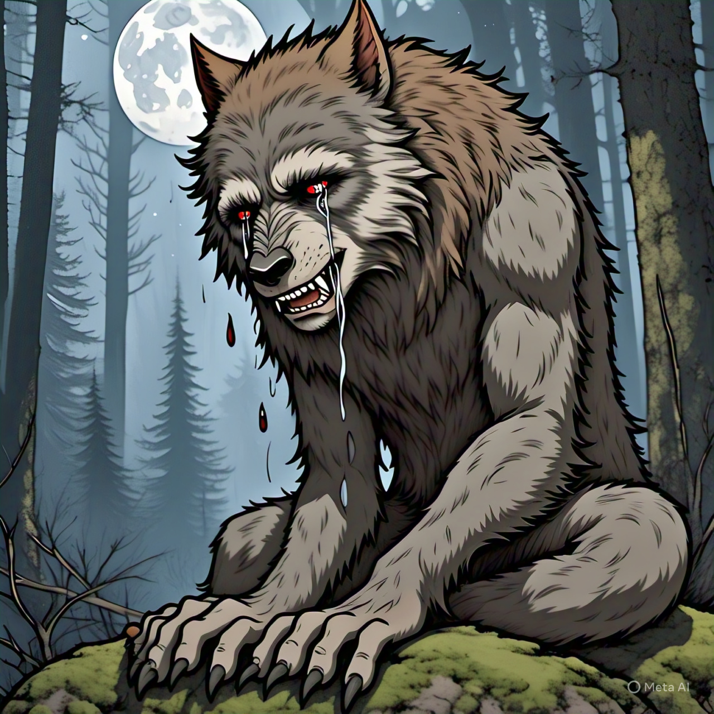
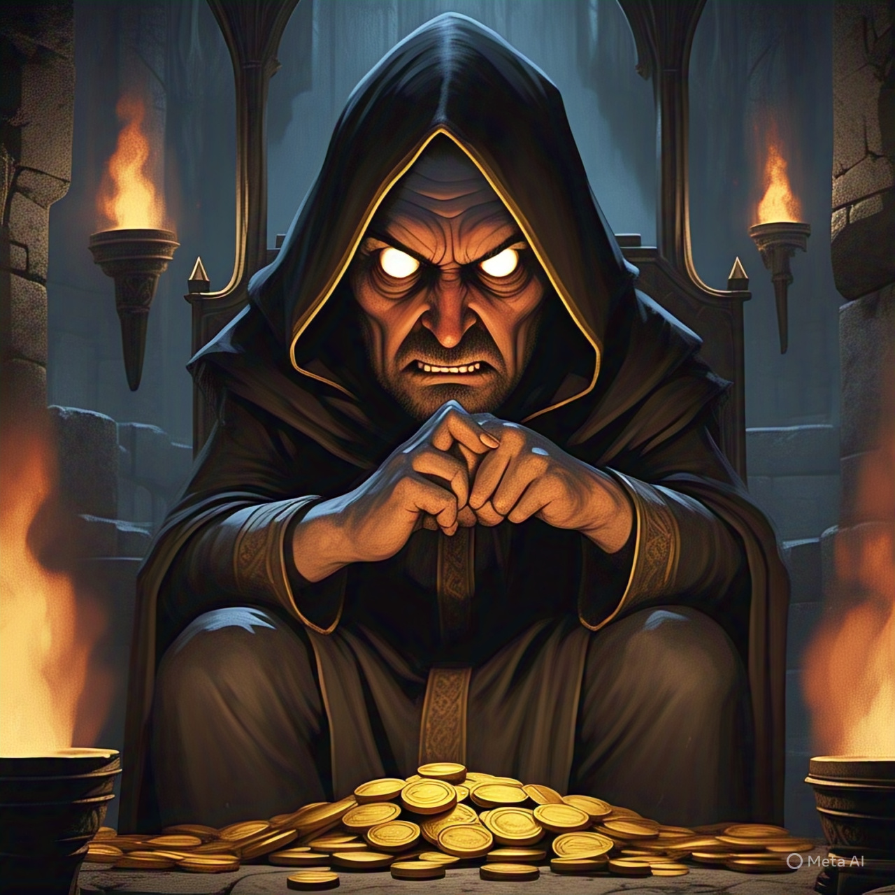
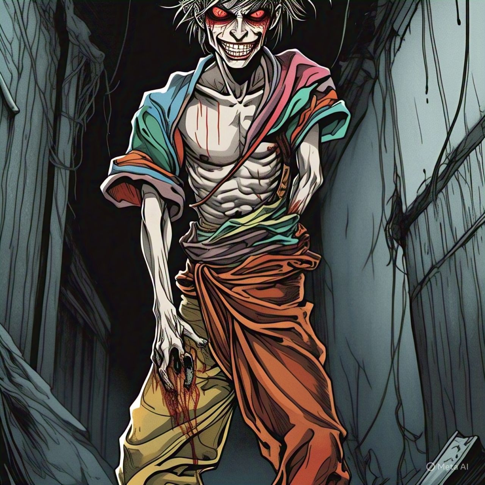

📜 A Lenda do Esqueleto Molestador
Dizem que em noites frias e silenciosas, quando o vento assovia entre os galhos secos, ele aparece… o Esqueleto Molestador.
Não, ele não morde. Não arranha. Ele... cutuca. Levemente. Com seu ossinho gelado.
Reza a lenda que ele anda pelos corredores das casas procurando pessoas distraídas assistindo série ou jogando. Ao menor sinal de vulnerabilidade… ZÁS! Um cutucão na costela.
Já houve relatos de pessoas que ouviram um leve “clac-clac” — o som de seus ossos andando no piso de madeira. Outros dizem que viram uma mão branca e magra desaparecer atrás da porta do banheiro.
A única defesa conhecida? Fingir que você já está sendo cutucado. Segundo os estudiosos do paranormal, ele só gosta de alvos desprevenidos.
Fique atento. Ele pode estar atrás de você agora mesmo...👀
Habilidades

O Lobisomem Pidão🩸
Certa noite, o Zé pediu fiado pra um lobisomem vegano e foi mordido por dó. Agora, em toda lua cheia, ele se transforma num ser peludo, carente e profundamente pidão.
Antes da maldição, Zé morava num puxadinho feito de telha de propaganda política e criava 3 pombos e uma garrafa PET cheia de moedinha. Ele já era pidão por natureza — a maldição só transformou a carência em poder sobrenatural.
Habilidades

📿O Padre do Pix
Nem todo herói usa capa. Alguns usam batina... e QR Code.
Padre Carlos era só um padre normal até que o dízimo começou a atrasar.
Foi aí que ele recebeu a “visão digital”:
“Evangelize... mas aceita Pix.”
Desde então, suas missas têm Wi-Fi, leitor de QR, e um modem ungido com água benta.
Fiéis relatam bênçãos instantâneas ao escanear o código — com 3% de cashback em fé.
Mas o que poucos sabem… é que o poder corrompe.
Quando ele aprendeu a receber Pix com o pensamento, nasceu uma nova entidade:
PIXTOPEDRO.
Parte padre. Parte algoritmo. 100% interesseiro.
Reza a lenda que se você falar “amém” sem querer, ele debita R$7,77 da sua conta.

📜 O Calça Erguida
O Maníaco das Calça Erguida não é um herói. Não é um vilã
Ele é algo além. Algo inexplicável. Quando ele aparece, o primeiro sinal de que algo está errado é quando você começa a sentir um desconforto inexplicável nas suas calças, como se elas estivessem tentando fugir do seu corpo.
Ninguém sabe de onde ele vem, mas ele sempre chega, normalmente no meio da madrugada, com a calça tão alta que nem o vento ousa descer. Ele caminha pelas ruas com a postura de quem domina o mundo, mas na verdade, está apenas tentando manter suas calças no lugar.
Habilidades